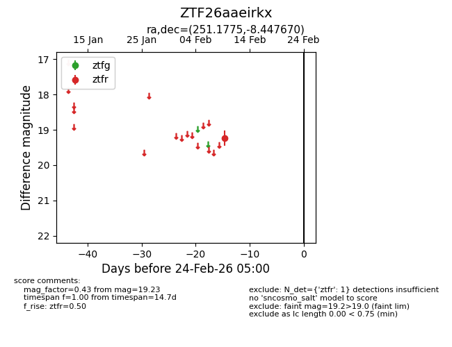
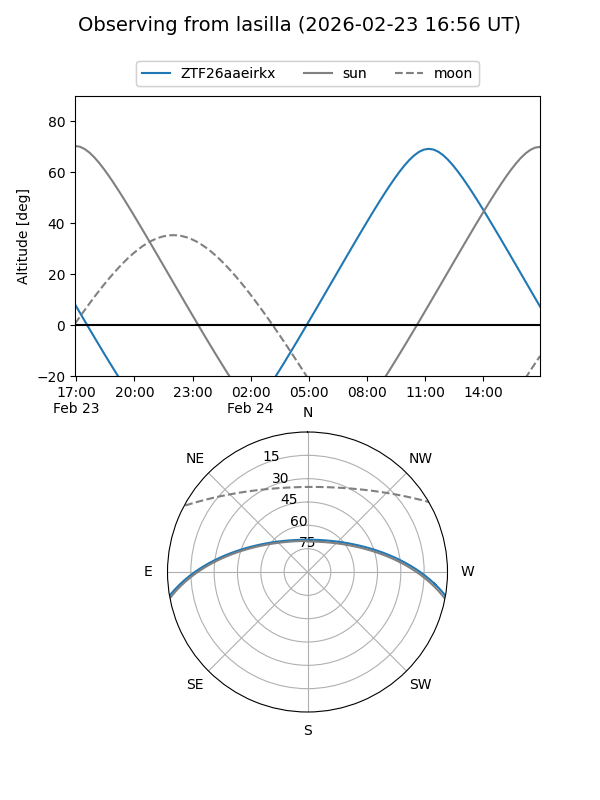
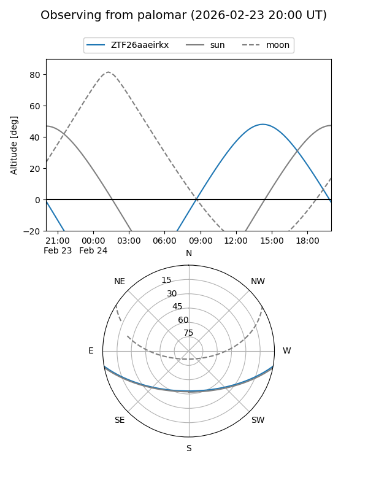

ZTF26aaeirkx
Target ZTF26aaeirkx at 2026-02-24 09:08
Aliases and brokers:
FINK: link
Lasair: link
ALeRCE: link
alt names
ZTF26aaeirkx (ztf,fink_ztf)
Coordinates:
equatorial (ra, dec) = 251.1775,-8.44767
equatorial (HMS+DMS) = 16:44:42.59,-08:26:51.61
galactic (l, b) = (9.3387,+23.28889)
Flags:
Photometry:
last ztfr=19.23
1 ztfr detections
Lightcurve

Visibility


Additional plots